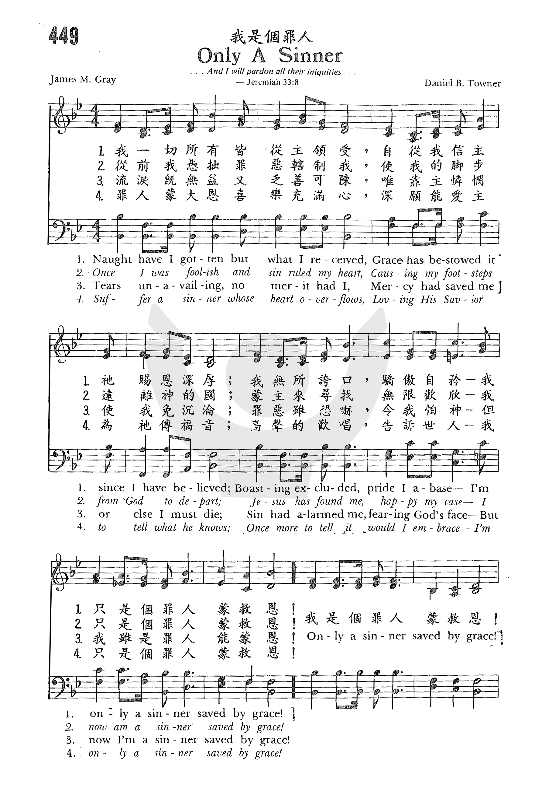
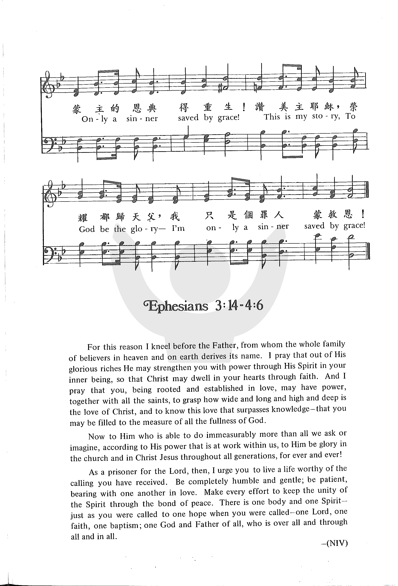
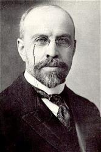
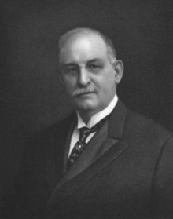

1247
Only A Sinner _James
M. Gray
我是个罪人
|
|
|
|
1 Naught have I gotten but what I received;
Grace hath bestowed it since I have believed;
Boasting excluded, pride I abase;
I’m only a sinner, saved by grace!
Refrain:
Only a sinner saved by grace!
Only a sinner saved by grace!
This is my story, to God be the glory—-
I’m only a sinner saved by grace!
2 Once I was foolish, and sin ruled my heart,
Causing my footsteps from God to depart;
Jesus hath found me, happy my case;
I now am a sinner, saved by grace! (Refrain)
3 Tears unavailing, no merit had I;
Mercy had saved me, or else I must die;
Sin had alarmed me, fearing God’s face;
But now I’m a sinner saved by grace! (Refrain)
4 Suffer a sinner whose heart overflows,
Loving his Saviour to tell what he knows;
Once more to tell it would I embrace--
I’m only a sinner saved by grace! (Refrain)
Source: Worship
and Service Hymnal: For Church, School, and Home #271
|
一、一切我所有，無非是接受；
全是恩所賜，在我信之後；
所以不自誇，也不自尊，
我是一個罪人蒙主恩！
二、從前我愚昧，罪惡轄我心，
使我的腳步完全遠離神；
今被主尋回，能不歡欣？
現今是個罪人蒙主恩！
三、流淚有何用，功行有何效？
若非神憐憫，滅亡怎能逃？
前我因有罪，不敢近神，
現今是個罪人蒙主恩！
四、我愛我救主，心中樂歡騰，
我這蒙恩人不能不說明；
讓我再說明 ── 用盡聲音 ──
我是一個罪人蒙主恩！
副歌 我是個罪人蒙主恩！我是個罪人蒙主恩！
這是我身分，榮耀歸給神，我是個罪人蒙主恩！
|
|
https://www.zanmeishige.com/tab/26024.html?songbook=1&index=449


|
|
|
|
1247
Only A Sinner 我是个罪人
|
Short Name: |
James M. Gray |
|
Full Name: |
Gray, James M. (James Martin), 1851-1935 |
|
Birth Year: |
1851 |
|
Death Year: |
1935 |

Born: May 11, 1851, New
York City.
Died: September 21, 1935, Passavant Hospital, Chicago, Illinois.
Buried: Woodlawn Cemetery, New York City.
Gray accepted Christ at
age 22. He was educated at Bates College, Lewiston, Maine (Doctor of
Divinity), and the University of Des Moines, Iowa (Doctor of Laws). In 1879
he became Rector of the First Reformed Episcopal Church in Boston,
Massachusetts, where he served 14 years. He then became dean (1904-25) and
president (1925-34) of the Moody Bible Institute, Chicago, Illinois, and
directed publication of four editions (1921-28) of the Voice
of Thanksgiving, official hymnal of the Institute.
A conservative theologian,
Gray was one of seven editors of the popular Scofield Reference Bible. He
was a fine scholar and excellent Bible teacher, but his interests went
beyond mere academics. He promoted the Sunday School, and took an interest
in civic affairs and patriotic causes. He backed efforts at social
betterment, supported Prohibition, and wrote about 20 books
--www.hymntime.com/tch/
Tune Information
|
Title: |
[Naught have I gotten but what I received] |
|
Composer: |
D. B. Towner (1905) |
|
Meter: |
10.10.9.9 with refrain |
|
Incipit: |
53451 76165 42347 |
|
Key: |
C
Major |
|
Copyright: |
Public Domain |
|
Short Name: |
Daniel B. Towner |
|
Full Name: |
Towner, Daniel Brink, 1850-1919 |
|
Birth Year: |
1850 |
|
Death Year: |
1919 |
Towner, Daniel B. (Rome,
Pennsylvania, 1850--1919).

Attended grade
school in Rome, Penn. when P.P. Bliss was teacher. Later majored in music,
joined D.L. Moody, and in 1893 became head of the music department at Moody
Bible Institute. Author of more than 2,000 songs.
--Paul
Milburn, DNAH
Archives
Daniel B. Towner
From Wikipedia, the free encyclopedia
Jump to navigationJump
to search
|
Daniel B. Towner
|
|
 |
|
Born |
Daniel Brink Towner
March 5, 1850
|
|
Died |
October 3, 1919 (aged 69)
|
|
Burial place |
Rosehill Cemetery |
|
Occupation |
Composer |
|
|
Daniel Brink Towner (March
5, 1850 – October 3, 1919) was an American composer who held a Doctorate
of music, and used his abilities to develop the music to several Christian
hymns which are still popular today.[1]
Early life[edit]
Daniel B. Towner was born in Rome,
Pennsylvania on March 5, 1850.[2][3] He
received his early musical training from his father, J. G. Towner.
He later studied under John Howard, George
Root and James
Webb.[3]
Musical direction[edit]
Towner was the music
director at Centenary Methodist Church, in
Binghamton, New York (1870-1882); York Street Methodist Episcopal
Church, in Cincinnati, Ohio (1882-1884); Union Methodist Episcopal
Church, in Covington, Kentucky (1884-1885); and Moody
Bible Institute, in Chicago, Illinois (1893-1919).
_at_Rosehill_Cemetery.jpg)
Towner's grave at Rosehill Cemetery
Daniel B. Towner died in Longwood,
Missouri on October 3, 1919.[2][3][4] He
was buried at Rosehill
Cemetery in Chicago.
Awards and works[edit]
The American
Temperance University in Harriman, Tennessee,
awarded Towner a Doctorate of Music in 1900.[1] His
musical works include:
https://en.wikipedia.org/wiki/Daniel_B._Towner
Only a sinner, saved by grace!
|
一、一切我所有，無非是接受；全是恩所賜，在我信之後；所以不自誇，也不自尊，我是一個罪人蒙主恩！
二、從前我愚昧，罪惡轄我心，使我的腳步完全遠離神；今被主尋回，能不歡欣？現今是個罪人蒙主恩！
三、流淚有何用，功行有何效？若非神憐憫，滅亡怎能逃？前我因有罪，不敢近神，現今是個罪人蒙主恩！
四、我愛我救主，心中樂歡騰，我這蒙恩人不能不說明；讓我再說明 ── 用盡聲音 ── 我是一個罪人蒙主恩！
副歌 我是個罪人蒙主恩！我是個罪人蒙主恩！這是我身分，榮耀歸給神，我是個罪人蒙主恩！
|
詩人介紹
這首詩歌（聖徒詩歌220首）的詞是蓋理詹姆斯(James
Martin Gray 1851-1935) 是所寫。他是美國人，在1851年 5月11日出生于紐約。他自幼生長在聖公會裡，并且在大學畢業之後，接受了全職教士的訓練。後來他在波士頓出任改革聖公會的主教。在1890-1900年代期間，他經常參與慕迪佈道團在紐約、波士頓和芝加哥的傳福音工作。通過他與慕迪的關係，以後他在慕迪聖經學院任職34年。在1904-1925年出他任慕迪聖經學院的教務長，在1925-1934年他出任該學院的校長。他寫了25本書和小冊子并且擔當了第一部Scofield聖經的七位編輯之一。他寫了許多的讚美詩歌，但是影響最大的就是這首詩歌。
這首詩歌的曲是唐納爾（Daniel
B. Towner 1850-1919）所寫。他出生于賓州，父親是知名音樂家。 他自幼受父薰陶，成年後歷任數大教會音樂主任及指揮，並訓練各教會音樂同工。 1885年他加入慕迪佈道團，是慕迪詩班中出色的男中音，也擔任過該詩班的指揮。 唐納爾在1893年出任慕迪聖經學院的音樂系主任，培育了無數近代的聖樂人才。 1919年，他在米蘇里州佈道大會領唱時，被主接去，真是殷勤工作至最後一刻。 他所作聖曲有二千餘首，諸如「恩典大過我罪」（Grace
Greater Than Our Sin），「在各各他」（At
Calvary），「非銀也非金」（Nor
Silver Nor Gold），「我錨拋牢」（My
Anchor Holds），「我是個罪人」（Only
a Sinner）等。
詩歌感想
『你有甚麼不是領受的呢？』（林前四7）
以撒的特點，就是他一生一世所有的一切，都是享受，都是接受。所以，甚麼叫作認識以撒的神？認識以撒的神只有一個意思，就是認識神是供給者，認識甚麼都是從神來的。你要認識父神，你就得認識子神；你要認識亞伯拉罕的神，你就得認識以撒的神。光有亞伯拉罕的神，我們還沒有辦法，因為祂住在人所不能靠近的光�堙F（提前六16；）但是感謝神，祂也作以撒的神。這就是說，亞伯拉罕把他的一切都給了以撒。這也就是說，我們甚麼都是接受的。
我們在神面前不過是一個接受的人。得救是接受的，得勝也是接受的；稱義是接受的，聖潔也是接受的；赦罪是接受的，得著釋放也是接受的。接受的原則就是以撒的原則。我們要說，阿利路亞！阿利路亞！因為所有的一切都是神給我們的。我們在神的話語中看見一件事，就是神所應許給亞伯拉罕的，也給以撒。以撒，神不是特別給他東西，神是將給他父親的也給他。這就是我們的拯救，這就叫我們得著釋放。── 摘自亞伯拉罕以撒雅各的神
詩歌介紹請參考——交通报
2004卷三 第一期诗歌赏析：我是个罪人蒙主恩！
|
https://www.churchinmarlboro.org/hymns/Only%20A%20Sinner.html
A gospel song which extols the
mercifulness which God is willing to bestow on every sinner is “Only a Sinner
Saved by Grace” (Psalms, Hymns, and Spiritual Songs, #796). The text was written
by James Martin Gray (1851-1935). Gray was the dean of Moody Bible Institute,
Chicago, Illinois, when he penned these words in 1905. The tune (Only a Sinner)
was composed by the director of Moody Bible Institute’s music department, Daniel
Brink Towner (1850-1919). The song was first published in Revival Hymns, 1905,
released by the Institute’s Bible Colportage Association and co-edited by Towner
and Charles M. Alexander.
Gray also authored the words to “What Did He Do?”, beginning, “O listen to our
wondrous story.” Other tunes provided by Towner include those for “Anywhere With
Jesus” by Jessie B. Pounds, “At Calvary” by William R. Newell, “Arise, My Soul,
Arise” by Charles Wesley, and “Trust And Obey” by John H. Sammis. In addition,
Gray and Towner collaborated on another song, “I Am Redeemed,” beginning, “Nor
silver nor gold hath obtained my redemption,” which has appeared in some of our
hymnals. PHASS, the single book that I know of among churches of Christ to
include “Only a Sinner Saved by Grace,” has just the chorus.
The song talks about several aspects of how a sinner is saved from sin by God.
I. Stanza 1 mentions the basis of salvation
Naught have I gotten but what I received;
Grace hath bestowed it since I have believed;
Boasting excluded, pride I abase;
I’m only a sinner, saved by grace!
A. We have nothing in this life but what we have received from God: Jas. 1:18
B. This is especially true in spiritual affairs because we are justified by
grace: Rom. 3:24-26
C. Therefore, like Abraham, we have nothing to boast of: Rom. 4:1-4
II. Stanza 2 mentions the procurer of salvation
Once I was foolish, and sin ruled my heart,
Causing my footsteps from God to depart;
Jesus hath found me, happy my case;
I now am a sinner, saved by grace!
A. All responsible human beings have been foolish and become guilty of sin: Rom.
3:23, Tit. 3:3
B. Thus, we were all like sheep going astray and departed from God: 1 Pet. 2:25
C. But Jesus came to seek and save the lost: Lk. 19:10, 1 Tim. 1:15
III. Stanza 3 mentions the means of salvation
Tears unavailing, no merit had I;
Mercy had saved me, or else I must die;
Sin had alarmed me fearing God’s face;
But now I’m a sinner saved by grace!
A. Because of sin, we had no merit to save ourselves by our own good works: Eph.
2:8-9
B. Hence, we must depend on God’s mercy: Tit. 3:5-7
C. And it is the fear of falling into His hands which moves us to look for His
mercy: Heb. 10:30-31
IV. Stanza 4 mentions the result of salvation
Suffer a sinner whose heart overflows,
Loving his Savior to tell what he knows;
Once more to tell it would I embrace—
I’m only a sinner saved by grace!
A. Those who are thus saved have a heart which overflows with joy: Acts 8:39,
Phil. 4:4
B. They love their Savior who died for them: Rom. 5:8, 1 Jn. 3:16
C. And they seek to tell this story and teach others also: 2 Tim. 2:2
CONCL.:
The chorus reminds us that all of us
are sinners and we can only be saved by God’s grace (notice that I did not say
that we can be saved only by God’s grace—there is a difference):
Only a sinner, saved by grace!
Only a sinner, saved by grace!
This is my story, to God be the glory—
I’m only a sinner, saved by grace!
Those who are Christians need to remember that each and every one of us is “Only
a Sinner Saved by Grace.”
https://hymnstudiesblog.wordpress.com/2021/05/24/only-a-sinner-saved-by-grace/
Words: James Martin Gray (b. May 11, 1851; d. Sept. 21, 1925)
Music: Daniel Brink Towner (b. Apr. 5, 1850; d. Oct. 3, 1919)
Links:
Wordwise Hymns
The Cyber Hymnal
Note: The Wordwise Hymns link has a biographical note on James M. Gray,
describing his wide interests and outstanding abilities. Dr. Gray was an
innovative Christian leader, the author of about twenty books, as well as many
tracts and pamphlets. He was the president of Moody Bible Institute, when my
father was a music major there, in the late 1920’s.
To begin with, let’s not misconstrue Dr. Gray’s use of that word “only,” in this
1905 gospel song: “Only a sinner.” He’s definitely not suggesting that being a
sinner is an insignificant thing–like a man climbing out of a wrecked car
suffering “only a scratch.”
In the song, the word is meant to emphasize that the saved person can take no
credit for being anything more than a needy sinner–that all the glory belongs to
God for his salvation. The opening lines of the song nail down that principle.
“Naught [nothing] have I gotten but what I received. Grace [God’s unearned,
unmerited favour and blessing] hath bestowed it I since I have believed.”
CH-1) Naught have I gotten but what I received;
Grace hath bestowed it since I have believed;
Boasting excluded, pride I abase;
I’m only a sinner, saved by grace!
Only a sinner, saved by grace!
Only a sinner, saved by grace!
This is my story, to God be the glory—
I’m only a sinner, saved by grace!
Just how impoverished are we, when unsaved–a category including us all? “All
have sinned and fall short of the glory of God” (Rom. 3:23; cf. Jude 1:15). The
Bible describes sinners as being “without God” (Eph. 2:12), and “without
strength [spiritually]” (Rom. 5:6). Apart from God’s grace, “our days on earth
are as a shadow, and without hope” (I Chron. 29:15). Yet we are also “without
excuse,” since God has done all that’s necessary to reveal Himself to us (Rom.
1:19-20).
Before I came to Christ, says Gray, “sin ruled my heart” (CH-2) and, as a
result, I was on the wrong path and heading the wrong way. Just being sorry for
my sin was not enough. “Tears unavailing, no merit had I” (CH-3). I had nothing
I could offer God that would cancel my debt of sin and gain me His acceptance.
In fact, it is “not by works of righteousness which we have done, but according
to His mercy He saved us” (Tit. 3:5).
CH-3) Tears unavailing, no merit had I;
Mercy had saved me, or else I must die;
Sin had alarmed me fearing God’s face;
But now I’m a sinner saved by grace!
“Without faith” in Him, we cannot hope to please the Lord (Heb. 11:6). The
sinner is “condemned already” (Jn. 3:18), and “the wrath of God abides on him”
(vs. 36), and “it is a fearful thing to fall into the hands of the living God”
(Heb. 10:31). All of that, and more, is the condition that James Gray captures
with his phrase, “only a sinner.” But, praise His name, God in grace has
provided a remedy in Christ.
“Christ died for our sins according to the Scriptures” (I Cor. 15:3). “I am not
ashamed of the gospel of Christ, for it is the power of God to salvation for
everyone who believes” (Rom. 1:16). “For by grace you have been saved through
faith, and that not of yourselves; it is the gift of God, not of works, lest
anyone should boast” (Eph. 2:8-9). We who trust in Christ have abundant reason
to rejoice.
CH-4) Suffer a sinner whose heart overflows,
Loving his Saviour to tell what he knows;
Once more to tell it would I embrace–
I’m only a sinner saved by grace!
Questions:
1) What other things can you think of that are true of the sinner?
2) How does what Christ has done provide the remedy for such things?
Links:
Wordwise Hymns
The Cyber Hymnal
https://wordwisehymns.com/2012/12/14/only-a-sinner/

.png){kind=link}
.png){kind=link}
_at_Rosehill_Cemetery.jpg){kind=link}